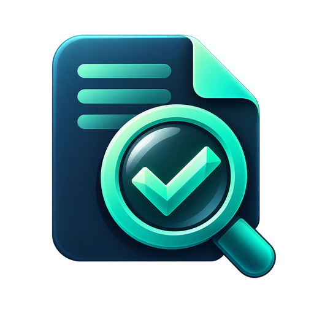
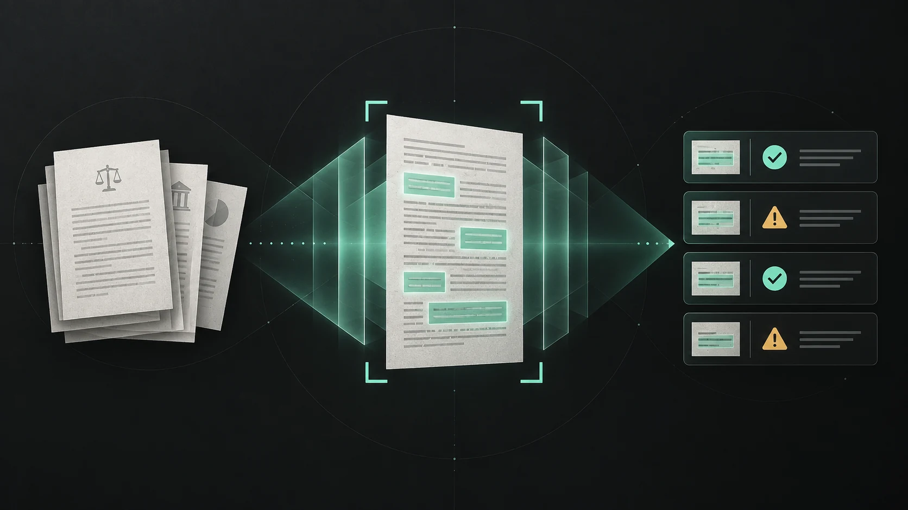

竞赛材料审查
先找齐，再找对。
覆盖数学建模、互联网+、挑战杯、大创、电子设计、计算机设计和蓝桥杯等赛事。支持上传 ZIP 材料包，自动核对包内文件清单与正文内容。
- 01数学建模论文与支撑材料
- 02互联网+ 商业计划与路演材料
- 03挑战杯实践证据与创新价值

明鉴 下载 Windows 版LOCAL AI DOCUMENT REVIEW
原生 WPF 桌面工具集中完成文件解析、规则核验和 AI 语义审查。拖入材料，问题与原文证据会自动排好。
01 / 方法
规则检查确定的事实，AI 理解材料的上下文。每一条结论，都能回到文件、页码和原文。
竞赛材料审查
覆盖数学建模、互联网+、挑战杯、大创、电子设计、计算机设计和蓝桥杯等赛事。支持上传 ZIP 材料包，自动核对包内文件清单与正文内容。
合同材料审查
定位付款比例、验收期限、违约责任和关键义务。结论附带原文片段，修改建议可以直接交给经办人。
02 / 模型能力
Qwen2.5 模型和 llama.cpp 已装进 EXE，无需账号和 API Key。
支持 OpenAI 兼容协议、Anthropic Messages、Gemini generateContent 和 Ollama。
服务地址、模型名称和密钥都可以在软件内配置，内置模型始终可用。
03 / 使用方法

从左侧进入具体比赛或合同审查。
软件解析材料并执行审查。
查看证据、整改并导出报告。